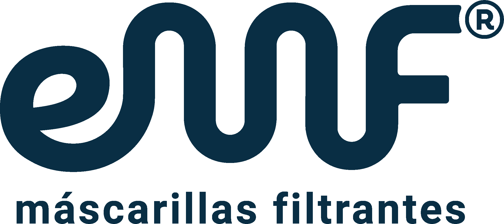
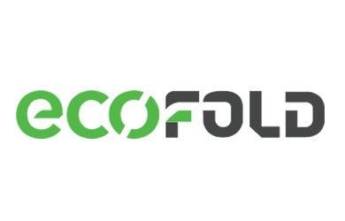
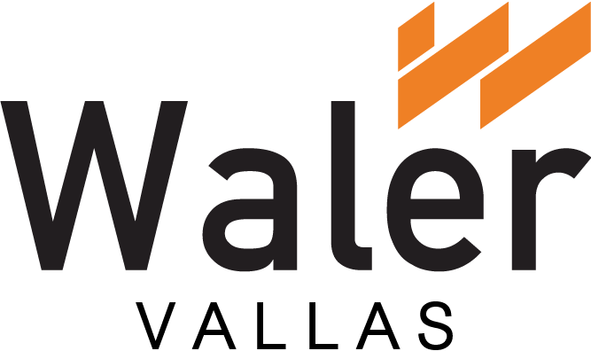
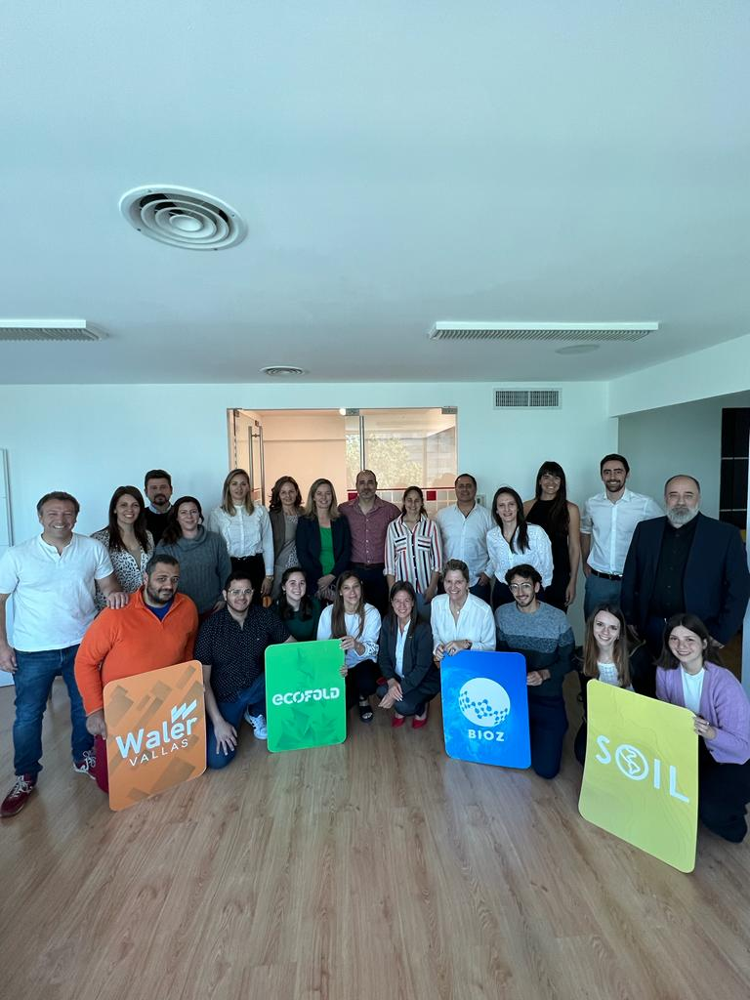

Scungio
I design and build sustainability systems — from strategy to field implementation.
I'm an Industrial Designer who builds sustainability projects from the ground up. For the past six years I've led the development of SOIL, a compostable packaging company, and coordinated multi-stakeholder climate initiatives across private companies, local governments, and civil society. I don't consult from outside — I build from within.
SOIL was born and scaled within Bioz, a triple-impact business hub where I served as Lead Project Manager from 2020 to 2024.

7,318,353 single-use plastics replaced in five years.
In Argentina, single-use plastics dominated foodservice. Sustainable alternatives existed abroad but hadn't been developed locally at commercial scale. We set out to change that.
I led end-to-end operations: product development, supplier coordination, commercial strategy, and team management.
- 7,318,353 single-use plastics replaced (~7 tonnes)
- 100+ active B2B clients
- 30+ commercialized products
- 5 years of sustained growth
What I learned: Sustainability sells when the price is right and the product works. The environmental argument always comes second.
Building the infrastructure for triple-impact businesses.
Bioz is a triple-impact business hub where I served as Lead Project Manager from 2020 to 2024. I led the design, management, and execution of four sustainability ventures — from initial concept to market.
Compostable packaging replacing single-use plastics in Argentine foodservice.


Reusable mask designed to replace single-use surgical masks — reducing medical waste at scale.


Sustainable display systems built with steel — the world's most recycled material.


Containment barriers manufactured with recovered recycled materials.
 ×
×

From idea to a working river barrier in 60 days. Zero funding.
Plastic waste from Buenos Aires neighborhoods was reaching the Río de la Plata through urban waterways. The solution required something that didn't exist yet — and someone willing to build it.
- Designed the barrier concept from scratch
- Coordinated companies for material donations
- Secured municipal permits and technical supervision
- Led volunteer installation on-site
The barrier was installed and operated for several months. Two severe floods tested it — I repaired the first; the second exceeded the prototype's scope. Field-validated.
“Multi-sector coordination is the bottleneck in environmental solutions — not technology, not funding.”
Sustainability doesn't happen inside a single organization.
Across four years, I've contributed to multiple cross-sector sustainability initiatives in Argentina.

Four-year collaboration between 200+ companies and local government co-designing climate action initiatives.

Participated in circular economy working groups convened by the City of Buenos Aires.

Engaged with the national bioproducts program led by Argentina's Ministry of Agriculture.

Active participation in Argentina's B Corp community and events.

[Matías: add 2-sentence description]

[Matías: add 2-sentence description]
I grew up along the Río de la Plata. Watching that river made me understand that environmental problems are always stakeholder problems — they require someone willing to sit at multiple tables at once. That's the work I've built my career around: connecting what needs to be connected, building what needs to be built, and staying in the field long enough to see it actually work.
Open to opportunities in sustainability, project management, and climate action — globally.